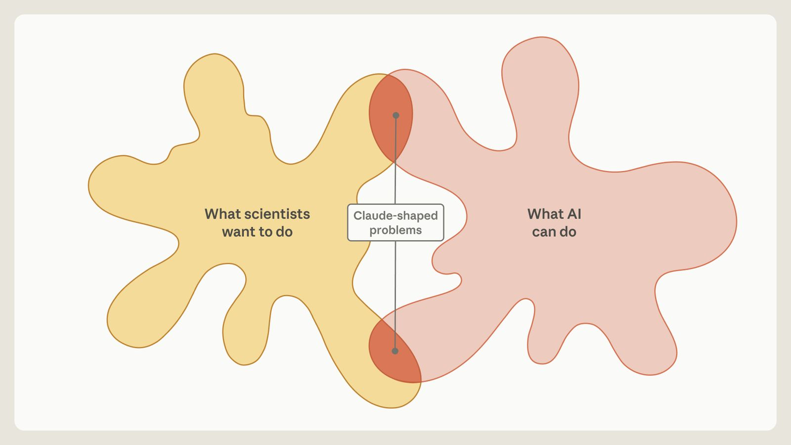
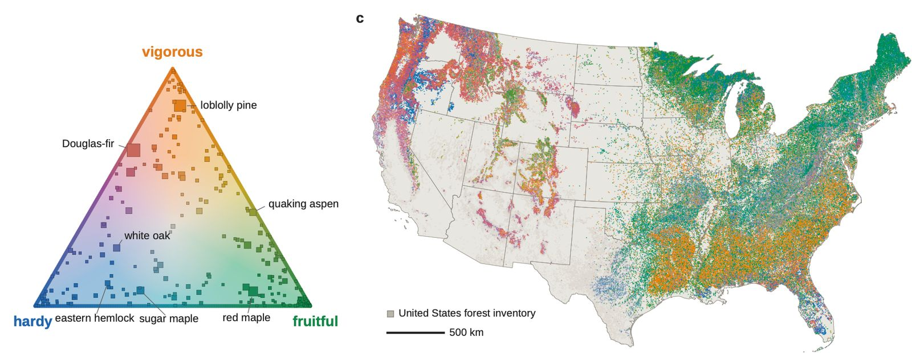
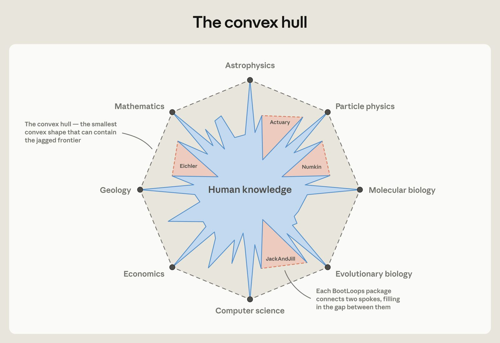

Summary: In this guest post, Prof. Matthew Schwartz returns to describe a new approach to AI-accelerated science. In Vibe Physics, Schwartz discussed similarities in capability between Claude and a physics graduate student. Here, he describes what happened when he stopped fighting Claude and allowed Claude to find “Claude-shaped” problems: ones best suited to the capabilities of the current generation of LLM tools. This led him to build BootLoops, a toolkit for exact calculations in quantitative science. Because similar calculations often turn up across very disparate areas of science, Claude found connections to ecology, population genetics, and a dozen other fields. These connections were often technically correct but scientifically unremarkable at first, so Schwartz worked with domain experts to steer BootLoops toward questions those fields care about. Below, we share more about these projects and how BootLoops came about.
Agentic AI is improving rapidly. Everyone notices the models seem smarter: they know more, make fewer mistakes, and have better ideas. If you follow the trend lines, it is easy to speak confidently about the potential of AI to revolutionize science. However, academic scientists trying to use the models today in their own work often feel a disconnect. The models may be solving challenging and longstanding problems, but so far these have mostly been well-scoped applications of existing techniques. Many of the headlines seem to be in mathematics, the one part of science where a problem can be stated completely and an answer checked absolutely. But most of science is not like that. And for many of us researchers and students, the distance between those headlines and what happens when we use these models can leave us frustrated and anxious.
The core conflict, as I see it, is that although these models are brilliant, working like a human scientist is not what current LLMs do best. Claude and GPT are good at science, but they are not scientists: yes, they are smart, but it can take a lot of hand-holding to get them to produce anything of scientific value. Physicists would call this an “impedance mismatch”: two systems that each work fine but are poorly matched, so most of what one puts in never gets through to the other. Here, the mismatch is between what scientists want and what AI does well.
So how can we fix it?
I started looking for examples where the impedance mismatches are less acute. I began by having Claude build an accessible suite of tools for mathematical physics. Before long, the tools found uses for other problems. This iterative process generated a set of software and scientific protocols, which I call BootLoops. BootLoops functions as a kind of harness for the LLM, much like Claude Code or Claude Science is a harness for Claude, or Codex is a harness for GPT. I’ve found BootLoops especially well-suited for a class of quantitative problems in science. It is also open-source, so it can be used with whatever model you like.

Once Claude had BootLoops, it kept noticing the same pattern: many fields have problems that a technique from mathematics, physics, or computer science would solve outright if anyone knew it existed. I started calling these “Claude-shaped” problems, and followed them outside high-energy theoretical physics—my home turf—into geology, biology, economics, and linguistics. In these other areas, I could not rely on my own expertise to know whether what Claude found was interesting. So I found some experts and asked. With their guidance, BootLoops was able to make substantive advances in many research areas.
Below, I share how BootLoops came about, describe some early findings in areas where I have been applying it, and share some of my thinking on how to resolve the impedance mismatch between human and AI scientists today.
Claude, take the wheel!
Last December, I tried using Claude as a research assistant, and found that Claude Opus 4.5 performed like a strong graduate student at 20 times the speed. Despite Claude producing a high-quality paper at the end of the experiment, it was a slog to get there. I had to correct every sentence it wrote, steer it away from irrelevant threads, and pull it back from dead ends.
This summer, I tried doing something different: instead of treating Claude like the collaborator I wanted it to be, I started to treat it like the collaborator it actually is. This required looking for problems suited to its strengths. Right now, Claude is just not able to help me with deep conceptual questions—but it does have a virtually unlimited breadth of knowledge across all domains, incredible coding skills, leading-edge knowledge of mathematics and statistics, and the ability to parse papers, appendices, and data at machine speed.
A natural place to start looking for Claude-shaped problems was in areas where coding could help. When Anthropic released Claude Fable 5 in Summer 2026, I wanted to see whether its cyber capabilities would translate to scientific computing. So I sought to test it by having it port, code up, and improve various methods from a handful of my papers and the adjacent literature on scattering amplitudes.
Scattering amplitudes are how we interpret data from the Large Hadron Collider: smash two protons at 13 trillion electron volts, and the amplitude is the theoretical bridge between the debris and whatever new particle, a Higgs boson or something unknown, the collision produced. At their core are Feynman diagrams, multidimensional integrals of a particular form. The ones we are struggling with now can each be a PhD thesis, or occupy a group for years.
Over the past 20 years an alternative has grown up: the S-matrix bootstrap. In the bootstrap approach, instead of grinding out the integral, you impose physical constraints until only one answer is possible. Knowing where the amplitude is infinite (its “singularities”) might narrow it to 20,000 options; a symmetry cuts that to 500; and so on down to one. The traditional bootstrap is purely analytic and has gone furthest in the most symmetric theories, where the constraints reach all the way to a single option (the nine-loop amplitude in N=4 super-Yang–Mills is an example). Closer to the real world you often run out of constraints before the end. A newer pivot, the semi-numerical bootstrap, closes the gap when you can also compute the amplitude at a handful of points to absurd precision (sometimes 1,000 digits): if few enough options remain, those numbers pin down the remaining coefficients exactly.
The semi-numerical bootstrap seemed ideal for agentic AI. It draws on mathematics, physics, and computer science that no one person has mastered; it needs a great deal of coding and algorithm development; and it is checkable, since the same numerics let anyone, expert or not, verify the final answer against the integral to as many digits as they like by running two scripts. The community's expertise is also unevenly distributed: good ideas sit in Wolfram Language, C++, Python, or Julia, and many more sit in papers with no code at all. So my first assignment for Fable 5 was to port all of it to a common framework, and to write the code the papers never provided.
Claude did this effortlessly. I was surprised when it reproduced the results from my paper in around 20 minutes, while the code I wrote to do it took me weeks. However, I was not surprised when it informed me that I was doing something very inefficiently and that there was a better algorithm I was unaware of.
Then, I asked Claude to search for unsolved amplitudes it could compute. It turns out that problems that are simple enough for the S-matrix bootstrap are also simple enough for humans to do—and, indeed, most have been done. It nevertheless found a few unsolved problems. After some discussion with the model, it became clear that Claude was limiting itself to amplitudes with the simplest family of functions: logarithms. So I asked, could it do the same thing for the next simplest family, elliptic functions?
Elliptic integrals are really hard, even for people like me who spend a lot of their time computing integrals. Only a handful of elliptic Feynman integrals have ever been computed, and none completely by the bootstrap, at least to my or Claude’s knowledge. The issue is not that the methods wouldn’t work, but rather that nobody had tried, since the expertise needed to do so is distributed among many humans. Claude, by contrast, easily generalized all of the machinery it had ported and built for the logarithmic case to these other integral classes. This time it wrote most of the software itself, or borrowed it from mathematics rather than physics. As the toolkit grew, it started to land one integral after another. Soon we had 30 integrals BootLooped from end to end, comprising 15 reproductions of known results by this new method and 15 that had never before been computed.
That was all after only a few weeks. Initially, I thought I would be satisfied just to do a write-up on that, but I was too tempted to see what else we (that is, me and Claude with BootLoops) could do.
“I know Kung Fu”
A serendipitous feature of science is that the same equations often appear over and over again in different contexts. In physics, for example, the diffusion equation, Fokker-Planck equation, and Schrödinger equation all have the same mathematical form, so if you develop a method to solve one problem, you can often apply it to many others. I knew that computations BootLoops was good at were relevant elsewhere: in cosmology and string theory, for example. What I didn’t know, but Claude was happy to tell me, was that these integrals could also map onto Bayesian evidence integrals in population genetics, or that the finite-field methods used for Feynman integral reduction could also apply to problems in evolutionary biology.
This kicked off a particularly fertile period of searching for and solving Claude-shaped (and, more narrowly, BootLoops-shaped) problems. Some ideas were immediately obvious as great applications. For example, the science of phylogenetics studies how to organize species into family trees using DNA; the relevant computation is a Bayesian evidence integral, whose output is a single number saying how well a candidate tree accounts for the observed DNA, an integral of the same kind BootLoops was originally built to do. As the ideas came, I insisted that Claude both use old tools and build new ones, so that the harness would grow. Each tool, even from a failed project, opened up new doors. Claude was getting more and more capable. It was like Neo in The Matrix after waking up from the Kung Fu download.
As the projects drifted from my professional comfort zone, however, I started to worry. When Claude claims something it did in my field is fantastic, I can judge whether that’s true or not (it often isn’t). But when it claims something it did in another field is fantastic, I find myself agreeing. My suspicion heightened, I knew I needed to bring in some experts to be sure. Indeed, I found that in almost all cases, Claude was technically correct, but the result was not all that interesting until the expert helped steer us.
One such project was on neutral biodiversity theory in ecology. In any ecosystem, some species thrive while others die off. Neutral theory asks how much of that life history is due to random chance. Building on earlier work, in 2001, the ecologist Stephen Hubbell suggested, provocatively, that perhaps it was all random. In 2005, the ecologist Rampal Etienne put an equation to Hubbell’s theory allowing it (at least in principle) to be tested in a precise way. Unfortunately, for 20 years nobody could solve the equation at scale. Claude recognized Etienne’s equation as BootLoops-shaped, and solved it. Applying the computation to data, we established that in ecology’s most studied forest on earth, Barro Colorado Island in the Panama Canal, the mix of tree species changes 4.5 times faster than neutral theory allows.
Excited by this result, I brought it to James O’Dwyer, a professor in plant biology and an expert in neutral theory. James was patient with me. Though he was impressed by the technical feat, he said the results would likely “be met with a shrug by many ecologists.” Ecologists had already observed, more qualitatively, that neutral theory can’t keep up with real forests. But James had a better idea: subtract the neutral prediction and study the remainder. This would give us a better sense of what changes were attributable to natural selection, competition, and the differences between species.
James and I proceeded to work intensively with Claude to craft a successor model. James has a physics background, so the disciplinary language barrier was more easily surmountable, but, like many scientists, he had not yet really appreciated the power of agentic AI. As the collaboration progressed, I became a sort of Claude handler, translating Claude-speak to James and keeping the model on track, while James pushed the model to produce something ecologists might value. The final result is something all three of us are proud of: a minimal predictive model of life histories in excellent agreement with data. We are currently extending the model from Panama to other global forest plots, using datasets that Claude has helped curate.

Another project involved looking at exact calculations in population genetics, a field that studies how genes vary within a population and why. Claude first used methods imported from mathematical physics to solve a 30-year-old integral expression for how natural selection shapes rare mutations. We applied it to gnomAD, the largest public catalog of human genetic variation. Claude was very excited about this result, but I wasn’t so sure. I had to write to three different biologists for validation before one responded, but at last I was able to recruit my colleague Michael Desai, who works in the field, though not on this exact problem. As with James, Michael was impressed by the technical result but not compelled by the science.
Michael noted, however, that more impactful results might come from studying correlations between pairs of mutations on a single chromosome, using the same or similar methodology. Within this scope, Claude found and built new tools, like the inequality certificates used for computer-assisted proofs in mathematics, and added them to the BootLoops kit. We then analyzed 5.7 billion pairs of nearby mutations in genomes from the 1000 Genomes Project, and found evidence for a mechanism called gene conversion. This is an important finding because nearly every analysis that uses linked genetic variation, from population history to disease mapping, ignores gene conversion. The bigger lesson is that AI can help find biology hidden in enormous genomic datasets, of which there are thousands sitting in public archives.
Other projects had a similar arc: Claude comes up with an initial finding I find compelling. I bring it to an expert, who is unmoved but sees the potential, and together we sculpt it into meaningful science. Interestingly, some of these drifted from BootLoops-shaped quantitative calculations to more general Claude-shaped work. For example:
- Economics. Economics journals now ask authors for a replication package, and an editor is often tasked with checking it. That is careful, manual work. Working with two economists, we built an AI data editor: it ported the packages of 4,452 papers in five leading journals from MATLAB, Stata, and other commercial tools to open-source code (some 30,000 routines) and checked essentially every validatable number against the published tables. The results appear in an NBER working paper.
- Linguistics. Word-stress catalogs are typically assembled by hand, with a few hundred languages, selection effects, and human preferences. Claude scoured every openly accessible source and, working with three linguists, we produced AccStack: a database of word stress covering 6,072 languages, quoting the deciding passage for nearly every entry, plus a bibliography of 160,000 phonology works.
Some additional highlights, each of which was done in collaboration with experts, and each of which is undergoing further exploration and verification, include:
- Phylogenetics. We made the Bayesian evidence for evolutionary trees fast to compute and exactly checkable, and found that single genes are often tied between competing trees by less than the error of standard sampling programs.
- Earth science. We combined equations and data from atmospheric science, geochemistry, and climate modeling to build a quantitative, predictive model of how the Great Oxidation Event unfolded through four glaciations.
- Genomics. We studied the statistics of single-cell RNA counts at scale to characterize bursting rates and the departure from the textbook telegraph model of gene expression.
- Sunspots. We deduced the lifecycle of sunspots using the methods of human population demographics, then extended the methodology to characterize starspots, a confounding factor in many exoplanet searches.
- Mathematical physics. We solved Watson’s “final problem”: the exact return probability of a 3D random walk with three unequal hopping rates, the last of the lattice integrals George Watson began in 1939.
- Cosmology. We built a complete theoretical toolkit to fit cosmological parameters to data on the universe’s large-scale structure, including the full two-loop power spectrum and the one-loop trispectrum.
- Statistics. Mixture models are notoriously ill-behaved; we derived precise approximations to their Bayesian evidence that make model selection practical, with applications from biostatistics to textual analysis.
Overall, this approach of iterative improvement of BootLoops, searching for Claude-shaped applications, and pushing to the scientific frontier with experts has been astonishingly productive. More information about these projects and others can be found on bootloops.ai.
The technical details
Running many projects at once (36 manuscripts in 18 fields with 19 coauthors over three months, out of some 400 candidate problems) takes a lot of coordination, both for me and for Claude. The setup that makes this manageable is fairly simple. The Claude Code sessions all run in terminals on Google Cloud virtual machines, linked to various GitHub and Overleaf repos depending on my collaborators’ preferences. I have separate sessions for each project, plus a master session that coordinates the others, allocates compute, and validates results. Each session involves agents that run the computations in the background, with intermediate results stored in markdown files in their respective folders. These subagents are helpful because I regularly run into Fable 5’s classifiers; instead of these blocks corrupting my whole session, they just shut down a single agent. I also have separate sessions for writing results; creating the GitHub repos, tool manuals, and the BootLoops website; writing and validating all the separate tool codes; and checking and rechecking results as an adversarial referee.
Still, the sessions require a lot of guidance. For example, Claude has no sense of time, and loves to be dramatic. At the end of one project, it told me “Matt — the formula is solved. Two years of campaign, four deep marches, …”. It had only been working for three days. When I ask for ETAs, the estimates are always either way too long or way too short. I tried telling Claude not to commit to an estimate until it ran a test to confirm, but that didn’t work well either. Over time, I started to get a feel for how long things would take myself, since I couldn’t rely on Claude to tell me.
A bigger problem was that Claude’s default approach seemed to be to try to grind through a long, multiday calculation rather than build a new tool that would make that same calculation take mere minutes. Time and again, I had to tell it to think smarter, not harder. Over the course of these long projects, compaction would often kick in, causing Claude to lose important context. To guard against this, I had Claude periodically organize its files and consolidate them, so it always had access to the latest version of the plan. I’ve written protocol skills and other tools into the BootLoops harness to address this. Some of these problems have also been solved in good commercial harnesses, like Claude Science. But many are just the sorts of irritations inherent in the current generation of agentic AI that I expect the models will eventually outgrow.
Here are a few more failure modes I encountered, and tips for dealing with them:
- Claude loves to declare victory. “Done, with one asterisk” is often “not done at all.” “Exactly that, with one refinement” usually means “no.” Giving Claude clear and rigid standards for what success looks like can help with this. On one project, it was proud of its proof, up to “one unproven lemma.” That lemma was the whole proof! I said no unproven lemmas. Then “done” again, but now with a new axiom.
- Look at everything yourself. I always ask to see plots. Even with all the monitors I set up, I’ve found the automated checks still can’t be trusted. Beware of qualitative claims like “good agreement.”
- Question the conclusions. Claude is good at performing calculations, but the conclusions it draws can be wrong. Have it explain what it found until you believe it.
- Supply the taste. Claude can find Claude-shaped problems, but there are thousands, perhaps millions, of them. Claude seems to favor old debates, highly cited but long forgotten. Asking it to focus on what is newly possible, not what is merely faster or involves more digits, helps, but you still can’t trust its judgment of whether something is interesting.
- Follow up. Once Claude has a great result, ask for an even greater one. It will always come up with something, and occasionally it’s brilliant.
- Watch out for the grind. Honestly, I never succeeded in getting Claude to estimate time well. Instead, I developed a sense of how long something interesting should take, and I learned to sense whether Claude was making what I considered progress on a sensible time scale. The model will grind forever if you let it.
It also bears mentioning that these projects were compute- and token-intensive. Part of the expense, for me, came from trying to build tools that would be useful beyond any one project: connecting fields, and assembling a package that others could pick up. I hope the BootLoops harness can be used broadly across quantitative science without each user having to rebuild everything from scratch. Agentic AI makes it easier to connect ideas and share codebases, and if we learn to use that strength, the community can move faster than any individual could alone.
Outlook
No matter how smart the models become, most scientific progress comes from real-world data that has to be acquired, understood, and checked, with each round informing the next question. AI can sit inside that loop, and that is genuinely valuable, but it does not collapse the loop to a point. Understanding is built up in increments, each one resting on the last; a cure for cancer or a fusion reactor will arrive that way too, not from a single prompt.
The focus on Millennium Prize Problems and Big Science may be, as Claude likes to say, a “footgun”: a feature that makes it easy to shoot yourself in the foot. Here, the risk is that unrealistic expectations may discourage productive uses that are already possible. Real progress will probably come the way it always has: by strengthening the foundations of scientific research and constructing increasingly sophisticated applications upon them. It will be sped up dramatically—as illustrated by the work I’ve described—but I don’t see any evidence or need to revisit the scientific method.
A term I like that is sometimes used to discuss AI science is the convex hull. Take a shape and connect every pair of its points with a straight line; the new shape you get is the smallest convex shape that contains the original: its convex hull. Science is now very disjointed: there are jagged frontiers everywhere. Biology pokes out one way, math another. One lab might spend 20 years learning everything about a single set of genes with a single method they have mastered, while neighboring genes and alternative methods lie fallow. A harness like BootLoops can connect these points, filling in the hull.

Things are changing fast, and it’s practically impossible to plan ahead. Why apply for a grant for three years of funding to compute a problem an AI model might end up solving overnight? I still don’t know how to train graduate students. Since I published my piece on vibe physics, that feeling has only become more acute. In some fields, such as computer science, the disruption is downright scary. Two years ago, I would have recommended a course on “Python for engineers” as essential. Today, it’s unnecessary. I have spent a lot of time on machine learning, building models to study various physical phenomena. Now, all of those models can be built by AI, so even learning the ins and outs of neural networks is of limited utility. Just tell Claude to find the state-of-the-art ML approach and it will do it for you.
I think BootLoops shows that if you find the right problem, much of the technical work of solving it can now be automated. That is liberating, in a way. But humans are still needed for the conceptual part. Because of that, I hope we can figure out a way to give humans the credit they deserve even for Claude-shaped science. Curiously, AI runs the risk of inverting the usual business model, where the person at the top gets the credit and the people working on the problem hands-on get none. I don’t know how this resolves, but it won’t be resolved by pretending the human contribution was the typing.
So where does this leave Joe Scientist? If you ask me, in a great place, actually. We now have tools at our fingertips that can make progress on seemingly intractable problems with lightning speed. I can foresee huge growth on the horizon in data-rich-but-theory-starved fields like systems biology. I can also easily imagine human minds being freed from the tedium of calculation and analysis to do the deeper intellectual work of direction and guidance. And most of all, I anticipate scientists branching out from their home turf to find synergy and collaboration, as I have with BootLoops. The most refreshing outcome of focusing on Claude-shaped science is that it helps us appreciate what human-shaped science looks like.
Details of the BootLoops harness and the science it has enabled can be found at www.bootloops.ai. The BootLoops harness is on GitHub for anyone to use and contribute to.
Acknowledgements
The science I produced with Claude and BootLoops would not have been anywhere near as interesting without the guidance and collaboration from my fellow humans: Isaiah Andrews, Nima Arkani-Hamed, Michael Desai, Scott Edwards, Noam Elkies, Cecilia Garraffo, Matthew Gordon, Thomas Grimm, Martin Hemberg, Mikhail Ivanov, David Johnston, Gary King, Paul Lewis, Brendan Meade, Amara McCune, Joe Pater, Subhabrata Sen, Siddharth Mishra-Sharma, James O’Dwyer, Kevin Ryan, Jesse Shapiro, and Xiaoyuan Zhang.
Disclosure
During this project, Schwartz has been working as a visiting researcher at Anthropic. BootLoops is not an Anthropic project; it is owned and maintained by Matthew Schwartz.